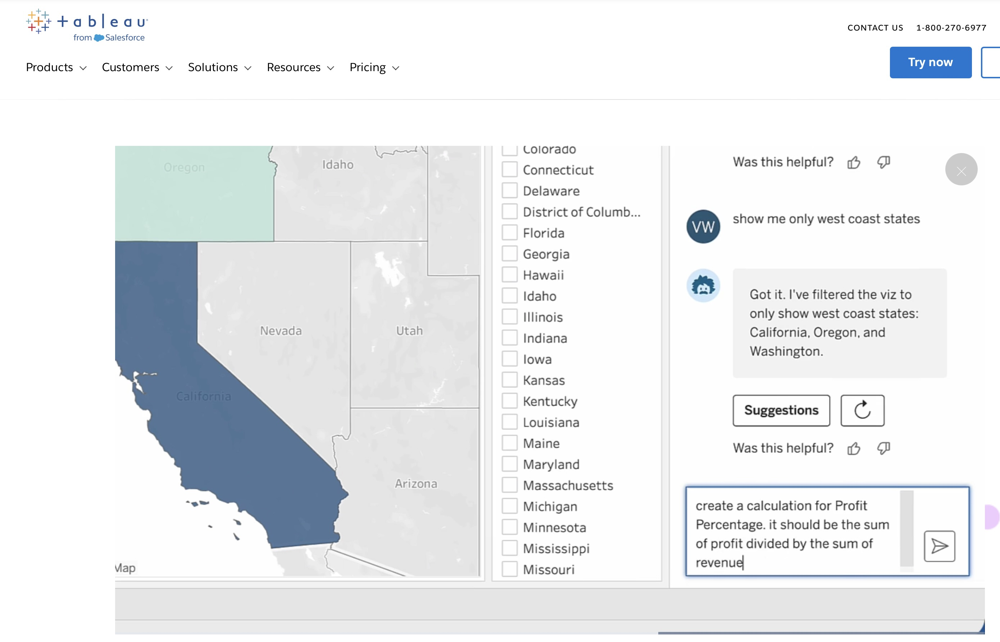
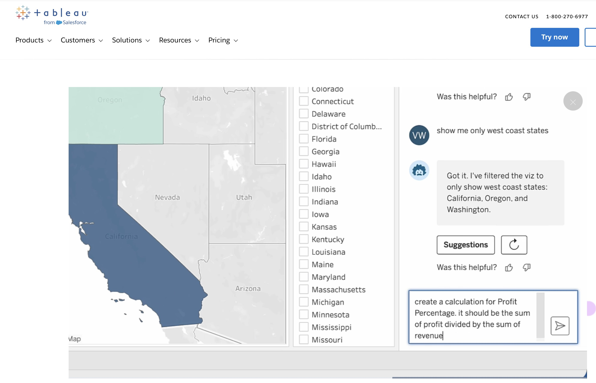

Aenean ornare velit lacus, ac varius enim lorem ullamcorper dolore aliquam.
... How Businesses are getting ahead in 2025
Data visualisation for business… Tableau and Power BI are easy tools right?… our 3 data viz experts can’t build everything for the whole business, so lets get this capability shared, roll out the tool to our non technical marketing teams, they can ‘self serve’ professional, data precision perfect dashboards. It’s easy. Just run an afternoon workshop, give them some logins and I’m sure they can work out how to build the dash, find their way around our data warehouse, acquire and add their particularly data feed to the overnight ETL, master the data dictionary, publish a dashboard to the business and present it to the CEO and job done. Ok so how do we really do it, how is AI affecting the challenge of making data viz easy, and what do our favourite tools look like down the line…

The landscape of data visualization is rapidly changing thanks to significant advancements in artificial intelligence (AI) and machine learning. Leading tools like Tableau GPT and Power BI Copilot now allow users to create visualizations instantly through natural language queries. This generative AI technology automates not only the creation of visual content but also provides predictive insights and proactive analytics, significantly reducing the manual effort traditionally associated with data visualization.
Additionally, immersive technologies such as augmented reality (AR) and virtual reality (VR) promise even deeper interactions with data, allowing users to explore complex information in intuitive, three-dimensional spaces.
Data visualization is no longer confined to specialists. Modern no-code and low-code tools like Tableau, Power BI, and Google Looker Studio empower users across various business functions to create their own visualizations without deep technical expertise.
However, organizations face challenges ensuring data literacy and proper interpretation of insights. Continued training and intuitive tool design are crucial to fully realizing democratization benefits.
Conversational analytics, driven by natural language processing (NLP), is transforming how users interact with data visualization tools. With platforms like Tableau GPT and Power BI Copilot, users can request and refine data visualizations using simple voice or text-based queries.
Despite current limitations like ambiguous language interpretation and data accuracy, advancements in semantic understanding and voice recognition promise significant improvements in the near future.
Future visualizations will be highly personalized, dynamically adapting to user roles, contexts, and preferences through sophisticated AI algorithms. Tools like Tableau Pulse already provide tailored insights based on user profiles and usage patterns.
However, personalized analytics raise ethical and privacy concerns, highlighting the need for transparency and robust data privacy practices.
As AI-driven visualization expands, ethical concerns regarding bias, misrepresentation, and data privacy have become increasingly critical. Organizations must prioritize responsible AI practices to ensure trustworthy visualizations.
By embedding ethical guidelines and promoting transparency in AI-generated visualizations, businesses can ensure integrity, accuracy, and compliance, fostering trust with stakeholders.
The future of data visualization is bright, driven by AI-powered innovation, expanded accessibility, and ethical awareness. Businesses and individuals who embrace these trends and proactively manage associated challenges stand to significantly enhance their decision-making capabilities, operational agility, and competitive edge in an increasingly data-centric world.
Explore more detailed insights in the following resources:
 

Aenean ornare velit lacus, ac varius enim lorem ullamcorper dolore aliquam.

Aenean ornare velit lacus, ac varius enim lorem ullamcorper dolore aliquam.

Aenean ornare velit lacus, ac varius enim lorem ullamcorper dolore aliquam.
Sed varius enim lorem ullamcorper dolore aliquam aenean ornare velit lacus, ac varius enim lorem ullamcorper dolore. Proin sed aliquam facilisis ante interdum. Sed nulla amet lorem feugiat tempus aliquam.